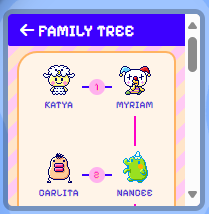
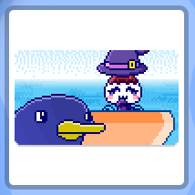
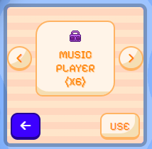
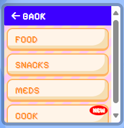
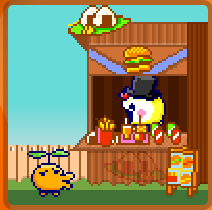
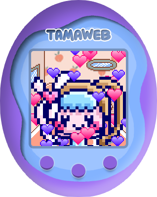
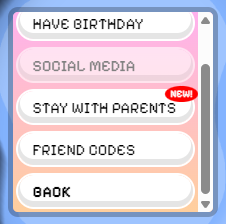
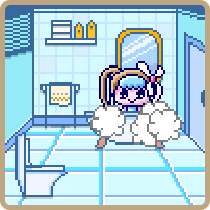
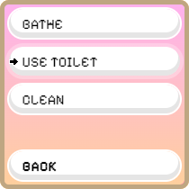

New Blog!
-
There is a new blog website ready now so we are retiring this one!
From now on, all of the new updates and patch notes will be posted on the new blog!
https://tamawebgame.github.io/blog
Update 7/12/2024 Changelog (HOTFIX):
- Regarding the family tree feature added in the last update, now you'll able to see your past generations that have ended as well!
Update 7/11/2024 Changelog:
-
Added a new cooking feature!
The cooking mini game has you take 3 pictures using your devices camera to use as ingredients in your dish!
After you take the photos stir the dish until it's mixed!
-
Added family trees and generation tracking!
Checkout your family tree from the newly added section in the stats menu!
You can also see your past generation pets from old runs that have ended.
Note that only families played from this update onward will appear in the tree. Families from before this update will not be shown.

-
You can now send your pet on a vacation!
If you want to take a break and not have to worry about taking 24/7 care of your pet
send them on a vacation for only $250!
While on a vacation, their needs will not be dropped and you can end their vacation at
any time!

-
Completely overhauled the UI design
Checkout the new design and share your feedback!


-
Reworked Achievements
Collect all the recently added and revamped achievements to unlock rewards!
- Many bugfixes and improvements!
Update 6/13/2024 Changelog:
-
Added a new job: Work at Stand!
In addition to the office work, now you'll be able to send your adult pet to work at a stand.
Pay attention to the customers feelings, the happier they are, the more they'll want to spend money buying stuff!
Take good care of your own pet to make sure they perform to their fullest on the stand, making their customers happy!

-
Added Accessories!
You can now dress up your pets by putting accessories on them!
- You can put on as many accessories as you want!
-
Currently there are 4 accessory items available to purchase from the mall, with many more to come:
- Witch Hat
- Crown
- Wings
- Frooties
- Currently accessories are only available for adults
-
You can now pet your digital friend!
Just select the home icon from the main menu and select the Pet option!
Petting will increase their fun stat
Tap the screen to show love to your digital friend and when you're done just don't touch anything to go back to normal mode!

- Added updated item sprites! (thanks/credits to @digiropa)
- Added breathing animation to all characters!
- Added jumping animation/sfx, now your pet may randomly jump when idling and taken care of!
- Added shadows to characters!
- Reworked and remade most sound effects
- In the main menu, changed the sleep icon to home icon because now in addition to sleeping you can pet and dress your character in the same menu!
-
Fixed a lot of important bugs
Like the fact the since the care and neglect update
your pet wasn't actually able to die if you left them alone
for an extended period of time (the chances of them dying was only triggering if you were in-game all the time and not when offline progressing), so you need to take a better care of them now :)
Update 6/3/2024 Changelog:
-
Added Mod Support!
Mod support has been one of the most requested features for the game so now we are happy to announce you'll be able to replace assets and resources such as
characters, food sprites, items, scene backgrounds
and more in the game with your own ones and publish them as mod packages that can be easily
installed by the players!
-
For mod creators:
Head on over to
https://autosam.github.io/Tamaweb/creator
and start creating!
If you are just starting out, download the Example Mod from
the creator dashboard, then click on "Load from file" button and select The
"ExampleMod.rop"
file that you've just downloaded to get familiar with how things work!
If you have any questions just ask on the Discord server!
-
For players:
We recommend joining our Discord server to get notified when other players post new
mods,
if you already have a mod file, you can install it in-game by going to Settings > Mods > Add Mod
You can also see or uninstall your active mods in the same page as well.
This is just the beginning and more features and possibilities will be added to the modding system in the future so stay tuned for more updates!
Update 4/29/2024 Changelog:
- Added the new Rainbow room background
- Added a new walkway background when going to the mall and the ability to skip the walking to
mall animation
- Added 3 new food items: Spaghetti, Telesushi and S-Special dish
- Added 3 new treats: Cream icepack, Bunny mooko and Paloodeh
Update 3/24/2024 Changelog:
-
Added pet death scenario, make sure you are not neglecting your pet for too long, otherwise
they might die!
- Baby: It will take around 24 Hours of neglect before they die
- Teen: It will take around 40 Hours of neglect before they die
- Adult: It will take around 54 Hours of neglect before they die
-
Added the ability to leave your pet with their parents so that they'll take care of them while
you're away.
Your pets stats will not decrase while they are at their parents house,
and they'll take care of them between 8am and 6pm
You can find the option
in the App menu from the main menu (if your pet has parents)

- Added a new room background; FUTURA, check it out in the mall!
- Added a new egg spawn animation
Update 3/22/2024 Changelog:
-
Now your pet will get dirty over time and you'll have to give them a bath using the new
Bathe option found in the cleaning menu!

-
Now you have the ability to make your pet go to the toilet using the Use Toilet option
found in the cleaning menu! check out for a symbol above their head, thats when their bladder is
nearly full!

-
There is a new doctor in town! check out the hospital and Dr.Banzo's clinic from the activities
menu if your pet feels sick!
- You can now message your friends using the Social Media app found in the apps menu!
- Tweaked and rebalanced some stat values
- Bugfixes and other improvements